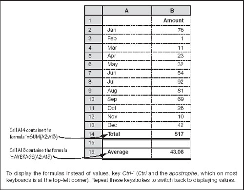
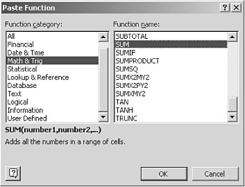

Your first day at the office
Making it look good
|
Plain English: this section focuses on the basics of entering and formatting text and numbers. |
Entering text. To input text, you simply click on a cell and start typing. Hit the Enter key when you have finished, or end the typing by pressing an arrow key. For example, if you are typing a list into a column, pressing the down arrow after entering each value will speed things up.
To format a cell super-fast, select a cell (or range of cells) with your mouse and then press Ctrl–1 (hold the Ctrl key down, press the number one and let go of them both).
Text display. Text that is too long to fit in a cell will not be lost. If the cell to the right is completely empty, the text will be displayed in its entirety. Any character in the cell to the right – even a space – will chop off the display. To see all the text, you can reduce the font size, make the column wider or wrap the text (using Format/Cells/Alignment).
Formatting text. Figure 4.2 shows the main formatting options and is, I hope, self-explanatory. Simply select one or more cells and click a toolbar button to apply a style. You can achieve more extensive control over formatting by selecting Format/Cells. Note that some number formats display positive numbers in black and negative numbers (e.g. losses) in red. This is handy for highlighting, say, underperformance.
Changing column widths and row heights. Double-click on the boundary between two column headers, and the column width will adjust automatically so that the longest entry displays fully. Drag the boundary to manually change the column width. Similar options apply to rows.
Creating a table
|
Plain English: the previous page gave you enough information to create a table. This section explains how you get it onto paper. |
If you are with me up to here, you know enough to produce a very professional-looking table. Of course, it will be a dumb table. In a moment, we will add some intelligence. Figure 4.3 on p. 52 (ignore the annotation for the moment) shows a simple table produced with the techniques mentioned above. More complex examples are scattered through this book. Printing a table is straightforward enough. Save your work, then follow the next few steps.
Fig 4.3. A simple table
Selecting the print area. Start by selecting File/Page Setup. The dialog box that appears allows you to choose which part of the spreadsheet you want to print. By default the whole active area will print (i.e. from cell A1 to the cell with content which is furthest away towards the bottom right). To specify that only part of the spreadsheet will print, click on the Sheet tab, click inside the Print Area input box, and then use your mouse to select the area of the spreadsheet to print.
Page features. While in the Page Setup dialog, you can also enter headers and footers for the printed page, specify if you want certain rows to appear at the top of each printed page and certain columns to appear to the left, and so on.
Make sure it stays on its paper. Now – still in the Page Setup dialog – click on the Print Preview button. This allows you to see if the table will fit neatly onto paper. To adjust the amount of paper that is covered, you can click Margins and drag the guides that appear. If you click Preview Page Breaks, the view will change and you will be able to amend the page breaks, font size and column widths. You can also insert extra page breaks by clicking anywhere in the row where you want the break, and choosing Insert/Page Break. You need to select View/Normal after using the page breaks preview mode.
Note that the Print Preview button is available on the File menu and in the Page Setup and Print dialog boxes. The Page Breaks Preview option can be accessed from the Print Preview mode or the Insert menu.
Converting a table into a report
|
Plain English: this section explains how to insert a spreadsheet table into a word document. You can do a once-only copy-and-paste. Or you can insert a dynamic link so that when you change the spreadsheet, the word document is automatically updated. |
Almost every report requires a cover and some explanatory text. You could do this in a workbook, using the first and last tab sheets as the cover and endnotes, and so on. However, you will soon discover that the relationship between a spreadsheet and a printed page is rather vague, and it is easier to write text in Word because that is what it is designed for.
Copy-and-paste. The easiest way to produce good-looking reports is to format your tables in Excel, and then insert them into your Word document. To copy data from a spreadsheet to a word document, which must both be open on your computer screen:
Select all the cells containing your table, right-click and choose copy; and then switch to the word document (alt-tab), right-click in the required location, and choose Paste.
Dynamic linking. Copy-and-paste could not be any easier. However, on many occasions you will want to use a sort of smart paste called dynamic linking. After you have created a dynamic link between two documents, any changes you make to the source will automatically be fed through to the target. For example, if you change a figure in the spreadsheet, next time you look at your Word document, it will have been mysteriously and automatically updated. This is a very powerful feature. To create a dynamic link requires only one more click:
In Excel, select all the cells containing your table, right-click and choose copy; and then switch to the Word document (alt-tab), choose Edit/Paste Special, and in the dialog box that appears choose Paste link and Microsoft Excel Worksheet Object, then click OK.
Now switch back to the spreadsheet (alt-tab again), change some figures in the table, flick back to the Word document, and the report will already contain the changes. If this appears to have potential, wait until you make your spreadsheet intelligent.
|
Making dumb tables smart
|
Plain English: this section introduces formulas. These automated calculations take all the agony out of doing the numbers. |
At last it is time to try a little trick which turns a dumb table into a very powerful thingumabob. Let me use a bit of simple arithmetic to demonstrate. Suppose you want to know the total of a column of numbers – such as those in Fig. 4.3. With a mouse click and a key press you can have the spreadsheet do the sum for you. This is how:
Click on the empty cell under the column of numbers (cell A14 in the example), and then click on the tool button. A busy dotted line will appear around the numbers to indicate which range will be summed. Hit the Enter key and the total will magically appear in the selected cell. You probably noticed that the spreadsheet guessed which cells you wanted to add up. You can override this electronic guessing game and use the mouse to select a different range of cells (i.e. move the dotted selection rectangle) before pressing enter.
All calculations in spreadsheets are called formulas. Once you have planted one, it will quietly watch the numbers it is guarding. If you change so much as one digit in its ambit, the table will update automatically. Try it. Download the sample spreadsheet for this chapter from this book’s website and press F9 a few times.
By the way, Σ is the Greek S, which mathematician geeks use as shorthand notations for ‘take the sum of’ – sorry if this makes a simple operation seem unnecessarily alien.
‘Part of the inhumanity of the computer is that, once it is competently programmed and working smoothly, it is completely honest.’
—Isaac Asimov
Formulas decoded
|
| When you were entering the summation formula and the hectic rectangle of little dots appeared around the selected range, you might have noticed that the target cell contained the code =SUM(A2:A13). I am sure you can decode it:
You can use the mouse to change the selected cells immediately before pressing Enter, when the range will be updated automatically. You can also edit the range using the keyboard, or enter a new formula by typing it directly into the cell. |
Common calculations
|
Plain English: this section discusses ways to enter formulas. I urge you to read it even if you are not beside a PC. |
You are probably ahead of me, and realize that spreadsheets do more than Greek addition. They have several hundred other built-in functions. Yes, several hundred. However, unless you want to do something out of this world, such as plan a NASA expedition to Mars or program a video recorder, you will never use more than a mere handful.
The 123 spreadsheet uses an @ instead of an equals sign to indicate that a formula follows.
If you want to type in plain text that starts with an = sign or another reserved character, prefix it with a single quote (as in : ‘= my salary).
The surprising thing is that even though there are all these built-in functions, the ones you use the most are the ones you create yourself. And to create them, all you need to know is a couple more things. I will demonstrate them with another example:
Suppose that you want to multiply the value in the top left-hand cell by the one immediately below it. In a third cell of your choosing, type =A1*A2 and press Enter. That is all there is to it.
Why the little star? Because there is no multiplication sign on a standard computer keyboard. Similarly, since there is no division key you indicate this operation with a forward slash: /. Addition and subtraction work as normal: + and −.
My logic is different
Spreadsheets calculate the answer to a formula by working through the instructions in their own unique way, doing multiplication and division before addition and subtraction, and so on. This can get fairly confusing. However, spreadsheets also do things in brackets first. If there is more than one set of parentheses, the calculation works from the inside outwards. Some examples will help make this clear. If cell A1 contains the value 100:
=A1 * 5 + 10 produces the result 510, but
=A1 * (5 + 10) gives the answer 1500.
When you have keyed in some coded calculation, the cell contains a formula, but displays the result as a value. In fact, all the characters and numbers you usually see when you view a spreadsheet are values. Click on a cell to see the underlying formula, if there is one. Click and then press F2 to audit the formula – i.e. to highlight the cells on which it operates.
Likewise:
=A1 * 5 + 10 / 2 generates 505, but
=A1 * (5 + 10) / 2 means that you get 750, and
=A1 * (5 + 10 / 2) results in 1000.
Note that you can mix reference to cells (such as A1) and constant values (such as 5) and built-in functions, such as in the following:
=SUM(A1:A10) + A15 + 500 or
=SUM(A1:A10,A15,500)
Or you can omit cell references completely, as in:
= 10 * 5 + 24.
When I give my electronic friend more-complicated calculations, I tend to ignore its built-in sequence order of arithmetic and always use brackets to indicate the required sequence. I find it easier to read and check later what the code was intended to do.
I also switch between the mouse and keyboard depending on the complexity of working out which cell I am referring to. For example, as well as keying the above formulas straight into the cell, you can key = click on cell A1 and then type *5+10. In other words, after an equals sign or an arithmetic operator (+ - * /) the spreadsheet expects a cell reference and it will accept it via a mouse selection or a couple of key strokes.
|
Built-in functions
|
Plain English: the next few paragraphs describe how you can access and understand the hundreds of built-in spreadsheet formulas. Again, you do not need to have a spreadsheet active to read about this topic. |
So, you ask, if there are hundreds of built-in functions where are they on the toolbars? Good question. They are all accessed by the button or Insert/Function. Click a cell and then click the button (or use the menu option) and the Paste Function dialog box will pop up and probably scare you silly. However, look again and it will not seem so bad.
The functions are grouped by category in the list box on the left. Click on one of these, and the right-hand list will change to show the available functions in that group. For example, if you click on Math and Trig, and then scroll down the right-hand list box, you will find our Greek friend SUM. Click on this word, and a little description obligingly appears below the list boxes. When you have found the function you are looking for, double-click it, or click OK. This current dialog box will close and another one will open. This new dialog guides you through entering the required information.
There is no point in me listing all the functions available. It would bore both of us silly and neither of us will ever use more than a small fraction of them. What I will do, is describe the useful ones as we work through this book. For example, averages are listed in Fig. 5.4 on p. 68. If you have a quiet moment and you want to know more, open your spreadsheet, press F1 to bring up the Help file, and read Creating Formulas and Auditing Workbooks – or browse the Paste Function dialog box:

Lists
|
Plain English: this short section outlines the way that spreadsheets can be used to store data. At first glance, this might appear to have little to do with managing numbers. However, it is a useful facility, and you will see that there are business finance applications. |
The grid pattern of a spreadsheet makes it very useful for managing lists. You might use it to store a list of employees (together with their contact and salary details), a record of your inventory (the items you stock, cost and retail prices, names of suppliers and so on), invoices issued, etc.
Always make a copy of a workbook before you make major changes to it. It can take hours to rebuild after one inadvertent booboo. Creating and subsequently reopening a clean copy takes seconds.
It is conventional to use one row per item (employees, widgets, etc.), and enter details for that item across the page. The very first row can be used for field names – e.g. name, address, salary. This layout is what the spreadsheet expects when you use the tools provided for managing lists. Let me show you one such tool.
To sort a table into alphabetical and/or numerical order
Select the whole table and then choose Data/Sort. The Sort dialog box allows you to choose which column or columns to sort on and whether to sort in ascending or descending order. It is self-explanatory when you look at it – and quite handy. You can sort individual rows or columns, but take care because you can totally muddle up a previously useful table. (This is one of the occasions when the Undo button can be very useful.)
Further reading
If you are interested in lists, I recommend the spreadsheet Help topic titled, believe it or not, Managing Lists. The use of data filters (see sub-topic Finding Rows That Meet Specific Conditions) is worth looking at.
Error trapping
|
| It is all too easy to mis-key a number or formula when using a calculator or spreadsheet. As a check on the accuracy of your work, always do a similar but easier sum in your head, on a scratch pad, or even in another area of the spreadsheet – and compare the results. For example, when multiplying 138.51 by 0.1135, you can temporarily simplify this to 140 × 0.1. The answer to this latter sum is 14. If your electronic helper produces a result that is significantly different from 14 you know you have made a mistake. Other cross checks are covered elsewhere in this book. |